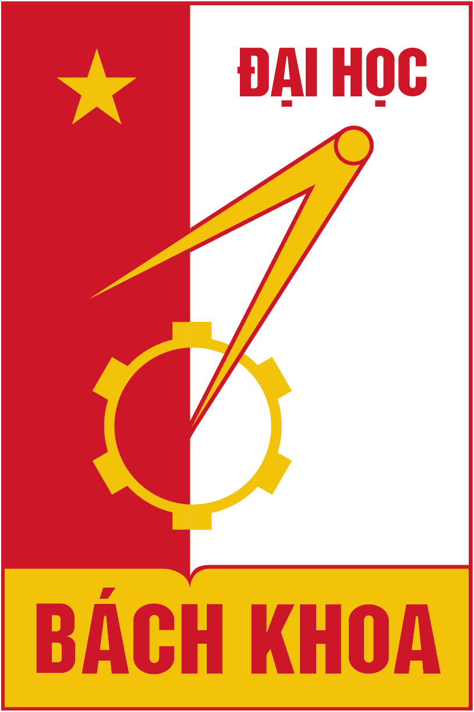
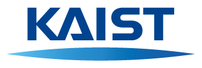
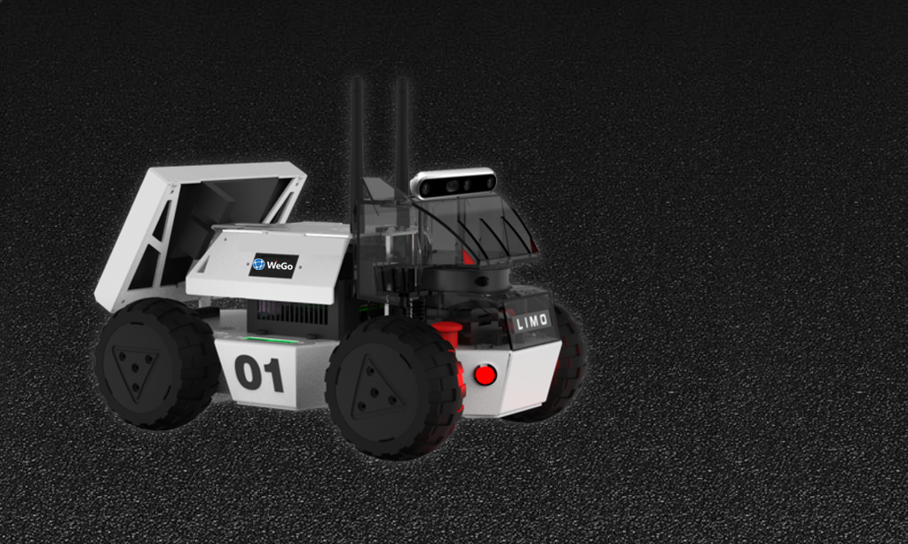
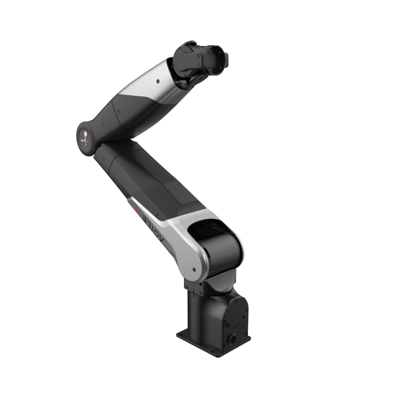

안전 제어
제어장벽함수와 도달가능성 해석으로, 계획이 충돌 영역 밖에 있게 합니다.
- TCST 2026Turning-circle control barrier function
- Mechatronics 2026COLREGs avoidance with a turning-circle CBF
- IFAC 2023Berthing under wind using reachability analysis
Safe Autonomy & Intelligence Laboratory
안전 자율·지능연구실
무인 이동체의 안전 경로계획·제어를 연구합니다.
KAIST에서 자율운항선 모델예측제어로 박사학위를 받고, 2025년 9월 공주대학교에 부임.

2023 — 2025
In progress
최적화 대신 신경망이 회피 방향을 고르게 해, 멀티모달 MPC를 더 가볍게 만듭니다.
계산은 줄이면서, 교사가 고른 안전한 회피 모드를 따라가도록 학습합니다.
SAIL
학부연구생
2026.03–
모바일 로봇 안전 경로계획 · CBF · RRT
학부연구생
2026.01–
적응형 CBF · 경로추종 · 장애물 회피
학부연구생
2026.09–
멀티모달 MPPI
NVIDIA · Research Scientist
회피 모드 imitation learning MPC 연구 협업 중

Huawei Research · Senior AI Engineer
회피 모드 imitation learning MPC 연구 협업 중

HUST · Lecturer
선박 편대 제어 · 제어장벽함수 연구 협업 중

KAIST · MORIN Lab
자율운항 선박 인지·계획·제어 연구 협업 중
Equipment

모바일 로봇. 실내 자율주행과 장애물 회피 실험.

7자유도 매니퓰레이터. 조작과 학습 실험.

OptiTrack Prime 계열 예시. 2027년 구매 예정. 로봇과 사람의 움직임을 측정합니다.